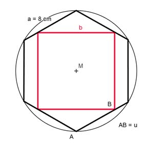
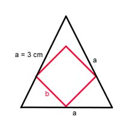
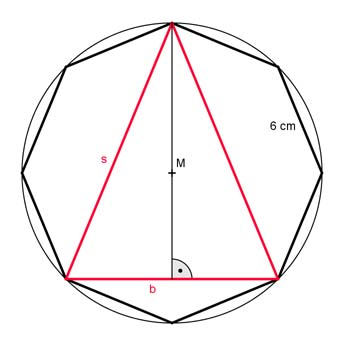
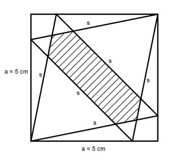
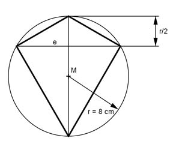
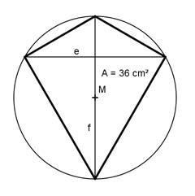

Wie löse ich Matheaufgaben?
Flächenberechnungen
Aufgabe 98 Einem Kreis mit dem Radius 12 cm ist ein regelmäßiges Achteck einbeschrieben. Wie groß sind dessen Seiten, Fläche und Radius des einbeschriebenen Kreises? Seite = cm
Aufgabe 99 Einem Kreis ist ein gleichseitiges Dreieck mit Seiten von 4 cm Länge einbeschrieben. Wie groß sind die Seiten eines im gleichen Kreis liegenden Sechsecks?
Aufgabe 100 Ein Quadrat mit einer Seitenlänge von 10 cm ist einem regelmäßigen Sechseck flächengleich. Wie lang ist eine Sechseckseite? Sie ist cm lang.
Aufgabe 101 Wie lang ist die Seite b des einbeschriebenen Quadrates? 
Aufgabe 102 Wie lang ist die Seite b des einbeschriebenen Quadrates?  b = cm
Aufgabe 103 Wie lang sind die Grundseite b, ein Schenkel s und die Fläche A des einbeschriebenen Dreiecks? 
Aufgabe 104 Ein regelmäßiges Sechseck mit einer Seitenlänge von 2 cm hat den gleichen Umfang wie ein regelmäßiges Achteck. Wie groß sind die Achteckseite s und die Flächen von Sechseck und Achteck? A8 = cm²
Aufgabe 105 Wie groß ist die schraffierte Fläche? 
Aufgabe 106 Ein regelmäßiges Fünfeck hat einen Umfang von 15 cm. Wie groß sind eine Fünfeckseite a, die Fläche A und der Umkreisradius r? ? a = cm
Aufgabe 107 Wie groß sind die Fläche A, der Umfang U und die Diagonale e des Drachens? 
Aufgabe 108 Wie groß ist der Umkreisradius r des Drachens, wenn e die Diagonale f im Verhältnis 4 : 3 teilt?  r = cm